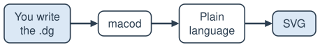
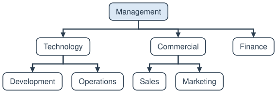
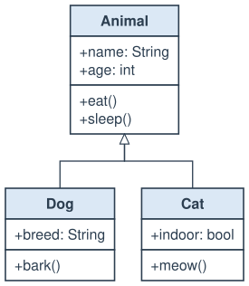
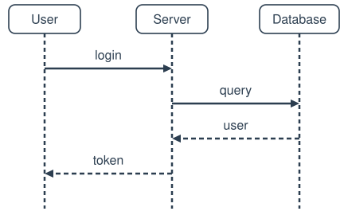
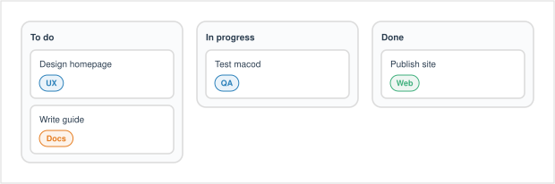
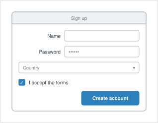
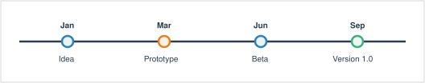
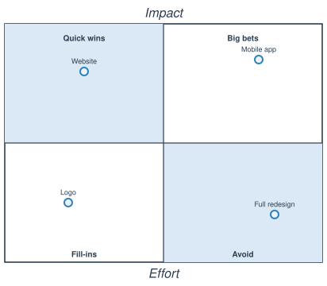
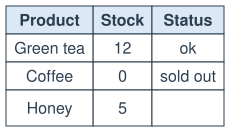

Write the idea of the diagram. macod expands the rest.
macod (macro to diagram) reads a language with components, data tables and modules like graph, tree or form, and writes the plain language that textod draws as SVG.
team.dgimport stylesdef person name role box $id w=130 align=center text "$name" bold text "$role" size=10data team name, role Ana, Design Luis, Backend Marta, QA Paul, Datadiagram team style=oreilly row gap=18 repeat team person "$name" "$role"macod team.dg | textod - -o team.svgAdvantages
A program that expands a diagram language before drawing it makes sense when diagrams change, repeat or come from data. This is what you gain by working this way.
- The diagram is text
- It lives in git next to the code. A change shows up line by line in a pull request and is reviewed like any other; there is no binary file or graphical editor in between.
- Repeated things are written once
- A
defdefines a component andrepeatuses it with each row of adatatable. Change the definition and every copy changes: in figure 3, one word,light, tinted all five cards. - Data lives apart from the drawing
- The rows of
data(or of a CSV) generate cards, table rows or screens. To update the diagram you update the data: adding Sophie in figure 3 meant adding one line. - You don't calculate coordinates
graph,treeandsequenceorder the levels, reduce crossings and route the arrows. You describe relationships, as in figures 4, 6 and 7, and the position comes out by itself.- Libraries for the usual diagrams
- UML, entity-relationship, states, use cases, kanban, timelines, quadrants, packet fields and screen components. They ship inside the executable;
macod --libslists them. - The result is stable
- The same text always gives the same output, with the same generated identifiers, and expanding that output again does not change it. That keeps diffs clean and makes it usable in continuous integration.
- Errors point to your file
- Expanding loses line numbers. macod writes
#line Nto keep them, and textod quotes the line of the file you wrote, not the one of the intermediate text. - It is small and has no dependencies
- A C++17 executable that only uses the standard library. It reads a file or standard input and writes to standard output, so it chains with any command-line tool.
For a one-off, free-form drawing where every stroke matters, a graphical editor is still more direct. macod pays off when the diagram repeats, is versioned or comes from data.
How it works
macod does one thing: it turns the full language into plain language, a text that only knows boxes, rows, columns and arrows. It does not draw; textod does that. The figure 2 shows the path.

Because they are two programs joined by a pipe, you can look at what is in between. With listing 1 above, macod team.dg prints listing 2:
macod team.dgstyle silberschatz box radius=0 sw=1.3 padx=8 pady=4 arrow sw=1.3 italic#line 5style oreilly box radius=8 sw=1.6 padx=14 pady=8 arrow sw=2.5#line 13diagram team style=oreilly row gap=18#line 16 box id=_1 w=130 align=center#line 16 text "Ana" bold#line 16 text "Design" size=10#line 16 box id=_2 w=130 align=center#line 16 text "Luis" bold#line 16 text "Backend" size=10#line 16 box id=_3 w=130 align=center#line 16 text "Marta" bold#line 16 text "QA" size=10#line 16 box id=_4 w=130 align=center#line 16 text "Paul" bold#line 16 text "Data" size=10The four cards are now four box elements. No def, data or repeat is left: everything in blue in listing 1 is gone. Each node carries a #line 16, the line of the .dg where the card was used, so errors point at your file.
Change the definition, add a data row
This is what expansion buys you. In listing 3 the card was marked light and a row was added to the table. The drawing was not touched.
team-updated.dg, with two lines changedimport stylesdef person name role box $id w=130 align=center light text "$name" bold text "$role" size=10data team name, role Ana, Design Luis, Backend Marta, QA Paul, Data Sophie, Supportdiagram team style=oreilly row gap=18 repeat team person "$name" "$role"Examples
Each example is a real .dg file, expanded with macod and drawn with textod. The files are in docs/examples.
- Hierarchy
- UML classes
- State machine
- Sequence diagram
- Kanban board
- Form screen
- Timeline
- Priority quadrant
- Data table
Hierarchy
The tree macro: the hierarchy comes from the indentation. You write one node per line and macod computes the rows, the columns and the connectors.
hierarchy.dgimport stylesdiagram hierarchy style=oreilly tree ceo "Management" light tec "Technology" dev "Development" ops "Operations" com "Commercial" sal "Sales" mkt "Marketing" fin "Finance"
UML classes
With import uml and graph node=cls, each node is a class with up to three compartments. Inheritance is an arrow with tail=hollow; the parent is written first so it ends up on top.
class-diagram.dgimport umldiagram class-diagram style=silberschatz graph node=cls gap=60 Animal "Animal" attrs="+name: String\n+age: int" ops="+eat()\n+sleep()" Animal -> tip=none tail=hollow Dog "Dog" attrs="+breed: String" ops="+bark()" Animal -> tip=none tail=hollow Cat "Cat" attrs="+indoor: bool" ops="+meow()"
State machine
With import state and graph node=st. The filled circle marks the start (kind=start) and the double circle the end (kind=end). The quoted text before the target is the label of the transition.
state-machine.dgimport statediagram state-machine style=oreilly graph node=st direction=right gap=170 start "" kind=start end "" kind=end pending "Pending" paid "Paid" shipped "Shipped" start -> pending pending -> "pay" paid paid -> "ship" shipped shipped -> "deliver" endSequence diagram
The sequence macro declares the participants and then the messages, in the order they happen. --> draws the response with a dotted line.
sequence-login.dgimport stylesdiagram sequence-login style=oreilly sequence u "User" s "Server" d "Database" u -> s "login" s -> d "query" d --> s "user" s --> u "token"
Kanban board
With import kanban: a board with lanes (lane) and cards (card). The tag and its color are parameters of the card.
task-board.dgimport kanbandiagram task-board style=ui board lane "To do" w=180 card "Design homepage" tag="UX" card "Write guide" tag="Docs" c=warning lane "In progress" w=180 card "Test macod" tag="QA" lane "Done" w=180 card "Publish site" tag="Web" c=success
Form screen
The form macro draws a screen with one line per element: field, secret field (*), select (v), checkbox ([x]) and button (>).
signup-form.dgimport uidiagram signup style=ui form id=p1 "Sign up" w=270 Name Password * v Country [x] I accept the terms > Create account
Timeline
With import timeline, each event takes a year or date, a text and an optional color.
roadmap.dgimport timelinediagram roadmap style=ui timeline event "Jan" "Idea" w=120 event "Mar" "Prototype" w=120 c=warning event "Jun" "Beta" w=120 event "Sep" "Version 1.0" w=120 c=success
Priority quadrant
With import quadrant. The names of the axes and of the four zones are parameters; each point is placed with x and y between 0 and 1.
priorities.dgimport quadrantdiagram priorities style=oreilly quadrant w=400 h=300 xaxis="Effort" yaxis="Impact" q1="Big bets" q2="Quick wins" q3="Fill-ins" q4="Avoid" dot "Website" x=0.25 y=0.8 dot "Mobile app" x=0.8 y=0.85 dot "Logo" x=0.2 y=0.25 dot "Full redesign" x=0.85 y=0.2
Data table
The datatable macro: the first row is the header and the rest are data. An empty cell is written with quotes, "".
inventory.dgimport stylesdiagram inventory style=silberschatz datatable Product, Stock, Status Green tea, 12, ok Coffee, 0, sold out Honey, 5, ""
Usage
Build
You need a C++17 compiler and Python 3 (only to embed the libraries in the executable). To draw you also need textod.
make # builds build/macod
make test # unit tests and the examples
make install # installs into /usr/local/bin (PREFIX=... changes it)Expand and draw
macod diagram.dg | textod - -o diagram.svg
macod diagram.dg -o plain.dg # keeps the plain language
macod --libs # lists the built-in libraries| Option | What it does |
|---|---|
INPUT | A .dg file, or - to read standard input. |
-o OUTPUT | Output file; standard output by default. |
-L DIR | Extra directory with libraries for import. Repeatable. |
--libs | Lists the libraries built into the program. |
-h, --version | Shows the help or the version. |
Libraries are searched in the directory of the input file, in the -L directories and, last, among the built-in ones. That is why you should not name your file like a library: a kanban.dg that runs import kanban would import itself.
The full language is described in docs/DSL.md and the plain language that macod writes, in docs/plain-language.md.